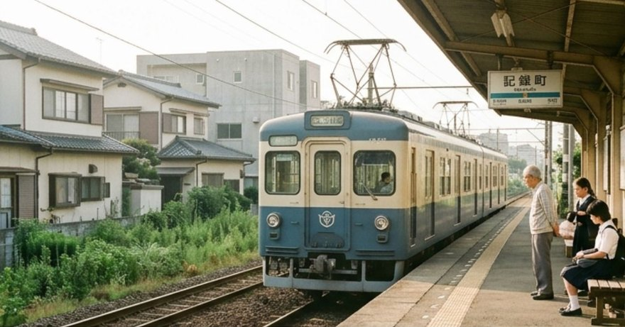
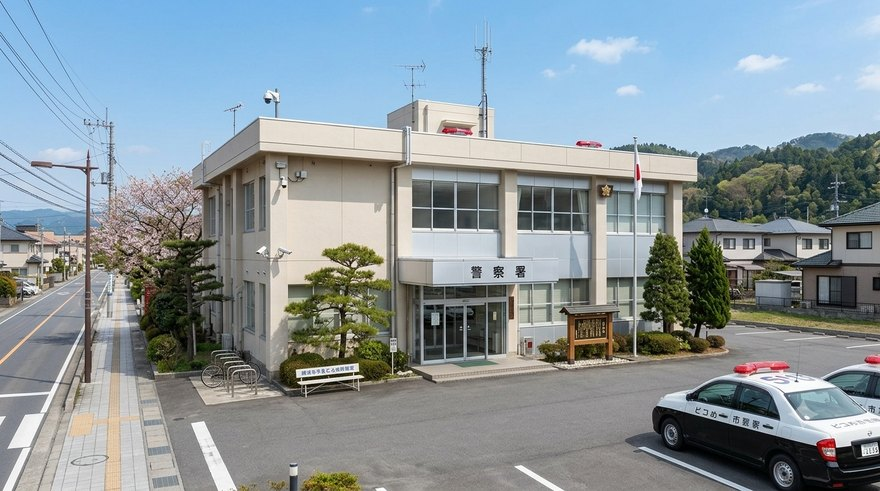
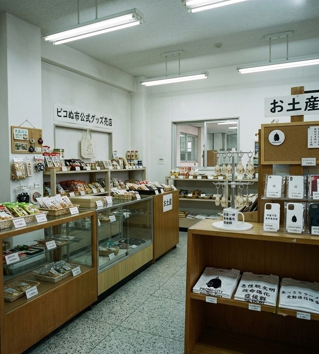
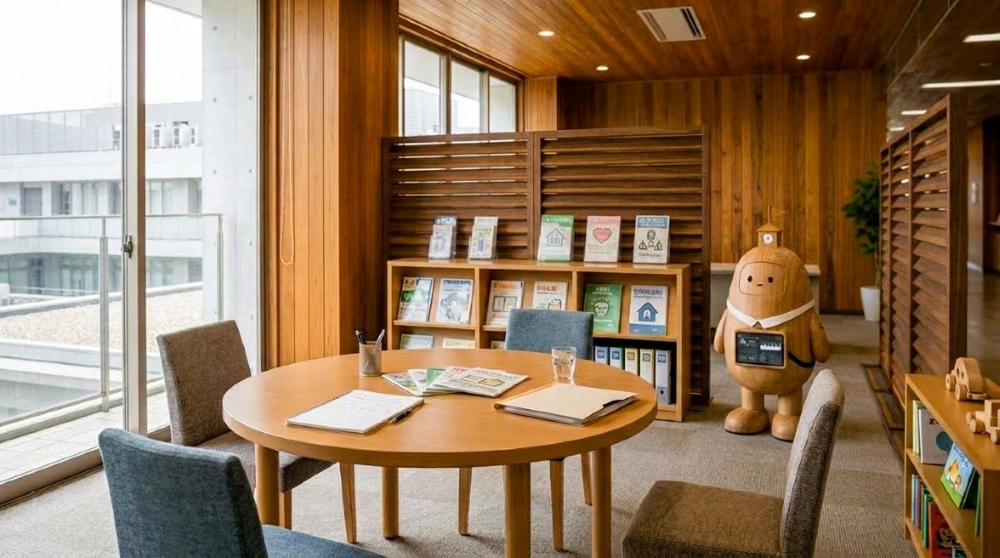

市内の主な公共施設をご案内します。
現代病専門医療センター。原因の分類しにくい不調に、記録という切り口から向き合います。
ピコぬ市の記録文化の中心。日用品と記録の間にあるものを収蔵・展示しています。
市民の可処分時間にまつわる相談窓口。効率化と、その手前にあるものを扱います。
各種窓口業務のほか、市政に関するお問い合わせ全般に対応しています。
記録と静けさを大切にする図書館。非効率文庫など独自コーナーがあります。
記録町の商店街を中心に、市内事業者の活動を支援しています。

市内を結ぶ鉄道路線を運行しています。ピコぬ中央駅・連結橋駅・記録町駅の3駅。

落とし物記録、行方不明記録の保護、デジタル安全相談、市民相談。

SUZURIで販売中のピコぬ市オフィシャルグッズ(ピコぬくんレポート)。

相談しやすさを大切にした、畳敷きの相談室。子どもも安心のプレイコーナー付き。